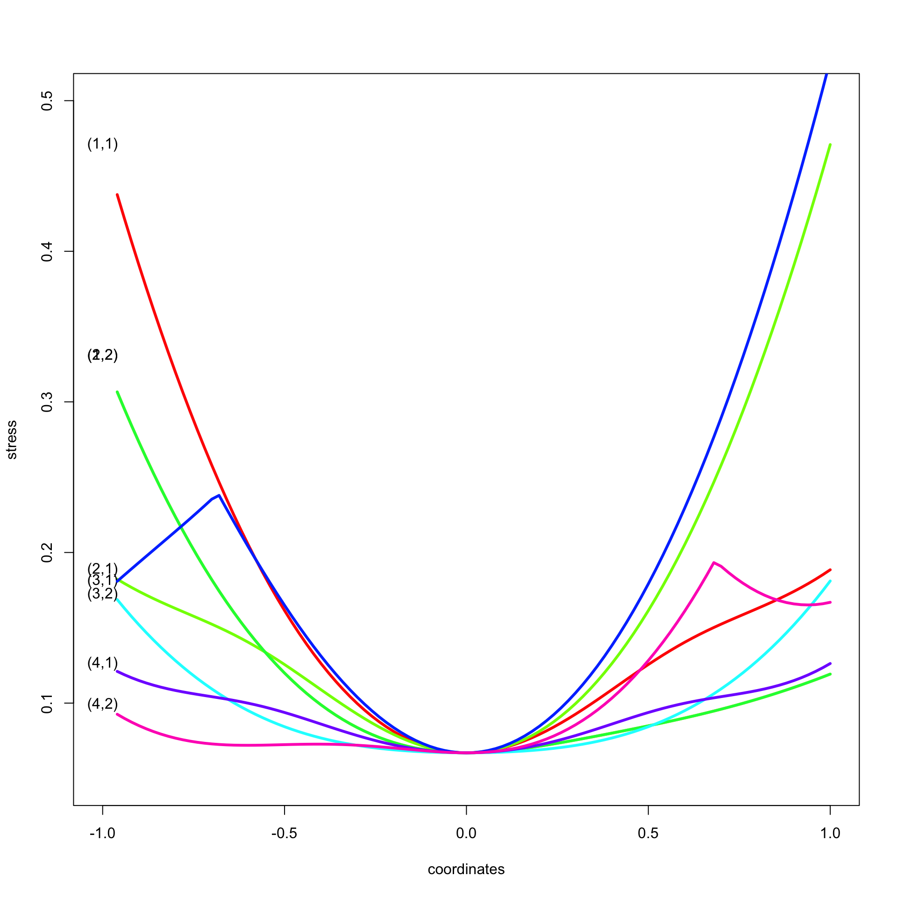
3 Stress Spaces
Stress is a function of many variables. Consequently there are many equivalent ways to define it by transforming the parameter space. In this chapter we discuss the major parametrizations that have actually been used. Each has its advantages and disadvantages.
3.1 Configuration Space
So far we have defined stress on \(\mathbb{R}^{n\times p}\), the space of all matrices with \(n\) rows and \(p\) columns. We call this configuration space. The usual MDS representation of a dissimilarity matrix is a scatterplot of \(n\) points in \(p\) dimensions. Therefor there is little doubt that configuration space is the most natural MDS space, and most of our theorems and derivations use this space.
Nevertheless, configuration space has some disadvantages. Even for \(n\) as small as four and \(p\) as small as two the dimension of the space of configurations is eight, and there is no compelling way to visualize stress as a function of eight variables. Secondly, if we work in configuration space we have to keep the indeterminacies of the representation in mind. Because of translational indeterminacy, minimizing stress over \(X\in\mathbb{R}^{n\times p}\) will give the same result as minimizing stress over \(X\in\mathbb{R}_C^{n\times p}\), the \(p(n-1)\)-dimensional subspace of all column-centered matrices. Because of translational and rotational indeterminacy it will also give the same result as minimizing stress over \(X\in\mathbb{R}_{CT}^{n\times p}\), the \(np-\frac12p(p+1)\) dimensional subspace of all centered lower triangular configurat ions (which have \(x_{ij}=0\) for all \(j>i\)). Or the same result as minimizing stress over the \(np-\frac12p(p+1)\) dimensional nonlinear manifold \(\mathbb{R}_{CO}^{n\times p}\) of all centered orthogonal configurations. Especially rotational indeterminacy complicates our analysis of MDS algorithms that operate on configuration space.
Another disadvantage of configuration space is that it needlessly complicates some of our formulas and derivations. Not all pairs of coordinate in a configuration \(X\) have the same status. Some pairs belong to the same row of the matrix, and some pairs to different rows. Some pairs of coordinates are in the same column, and some are in different columns. This complicates formulas which depend on considering pairs of coordinates, such as second derivatives.
One way to make a picture in configuration space is to plot the \(np\) individual coordinates as functions of a one-dimensional perturbation. In figure @ref(fig:piccoorc) we illustrate this with an example. We have four objects, with all weights and dissimilarities equal, and the \(4\times 2\) configuration is an equilateral triangle together with its centroid. Everything is suitably scaled, and we perturb each coordinate using 101 values equally spaced between -1 and +1.
delta <- wdef(4)
w <- wdef(4)
w <- w / sum(w)
s <- sum (w * delta ^ 2)
delta <- delta / sqrt (s)
x <- matrix(c(0,0,1,0,.5,sqrt(3)/2),3,2,byrow = TRUE)
x <- rbind(x, apply(x, 2, mean))
x <- apply(x, 2, function(x) x - mean(x))
d <- as.matrix(dist(x))
s <- sum (w * delta * d) / sum (w * d * d)
x <- x * s
d <- d * s
h <- smacofR(w,
delta,
p=2,
xold = x,
eps=1e-15,
xstop=TRUE)itel 1 eiff 0.0000000000 sold 0.0334936491 snew 0.0334936491 print(eigen(h$h)$values)[1] 3.333333e-01 2.559831e-01 2.559831e-01 2.224907e-16 2.146434e-16
[6] 3.456430e-17 -2.151233e-17 -1.812014e-16x<-matrix(c(0,2,1,1,0,0,sqrt(3),sqrt(3)/3),4,2)
z<-matrix(c(0,-2,sqrt(3),-2-sqrt(3)/3,0,0,sqrt(3),2+sqrt(3)),4,2)
eps <- 0.00001
d <- as.matrix(dist(x + eps * z))
smacofLossR(d, w, delta) [1] 0.25598313.1.1 Zero Distance Subspaces
A zero-distance subspace is a subspace of configuration space in which one or more distances are zero. That a zero distance indeed defines a subspace follows from the fact that the nonlinear equation \(d_{ij}(X)=0\) is equivalent to the homogeneous linear equation \(x_i=x_j\).
The number of zero-distance subspaces is the same as the number of set partitions of \(n\) objects, which is the Bell number \(B_n\). Bell numbers are defined by the recursion \[\begin{equation} B_{n+1}=\sum_{k=0}^n\binom{n}{k}B_k, (\#eq:bellnums) \end{equation}\] with \(B_0=1\). The next ten Bell numbers \(B_1,\cdots,B_{10}\) are 1, 2, 5, 15, 52, 203, 877, 4140, 21147, 11597. So there are lots of zero-distance subspaces.
The gradient in configuration space for all \(X\in\mathbb{R}^{n\times p}\) is \[ \nabla\sigma(X)=(V-B(X))X. \] \[ \nabla\tilde\sigma(\theta)=(\tilde V\theta-\tilde B(\theta)\theta) \] \[ \frac12\{\nabla\tilde\sigma(\theta)\}_s=\text{tr}\ Y_s'(VX-B(X)X)=\text{tr}\ Y_s'\nabla\sigma(X), \]
with \(X=\sum_{s=1}^r\theta_sY_s\).
Thus \(\nabla\tilde\sigma(\theta)=0\) if and only if \(\nabla\sigma(X)\in\mathcal{Y}_\perp\), the subspace of \(\mathbb{R}^{n\times p}\) orthogonal to \(\mathcal{Y}\). Specifically \(\nabla\sigma(X)=0\) implies \(\nabla\tilde\sigma(\theta)=0\). If the \(Y_s\) span all of \(\mathbb{R}^{n\times p}\) then \(\nabla\tilde\sigma(\theta)=0\) if and only if \(\nabla\sigma(X)=0\).
For the relationship between the minimization problems in coefficient space and configuration space we also study the relationship between the two Hessians.
For all \(X\) and \(Z\) in configuration space \[ \frac12\nabla^2\sigma(X)(Z,Z)=\text{tr}\ Z'VZ-\mathop{\sum\sum}_{1\leq i<j\leq n}w_{ij}\frac{\delta_{ij}}{d_{ij}(X)}\left\{\text{tr}\ Z'A_{ij}Z-\frac{\{\text{tr}\ Z'A_{ij}Y\}^2}{d_{ij}^2(X)}\right\} \]
For any \(\theta\) in coefficient space \[ \frac12\nabla^2\tilde\sigma(\theta)=\tilde V-\mathop{\sum\sum}_{1\leq i<j\leq n}w_{ij}\frac{\delta_{ij}}{d_{ij}(\theta)}\left\{\tilde A_{ij}-\frac{\tilde A_{ij}\theta\theta'\tilde A_{ij}}{d_{ij}^2(\theta)}\right\} \] and thus
\[ \xi'\nabla^2\tilde\sigma(\theta)\xi=\nabla^2\sigma(X)(Z,Z). \] where \(Z:=\sum_{s=1}^r\xi_s Y_s\) and \(X:=\sum_{s=1}^r\theta_s Y_s\).
Thus if \(\theta\) is a local minimum in coefficient space then \(\nabla^2\sigma(X)\) is positive semi-definite on the subspace \(\mathcal{Y}\). If \(X\in\mathcal{Y}\) but \(Z\not\in\mathcal{Y}\) it is perfectly possible that \(\nabla^2\sigma(X)(Z,Z)<0\), and thus \(X\) can be a saddle point in configuration space. If \(X\in\mathcal{Y}\) is a local minimum in configuration space, then \(\theta\) is a local minimum in coefficient space. Of course if \(\mathcal{Y}\) is the whole space then \(\theta\) is a local minimum in coefficient space if and only if \(X\) is a local minimum in configuration space.
\[\begin{multline} \sigma(X(\theta+\epsilon\xi))=\sigma(X(\theta)+\epsilon\mathcal{D}X(\theta)(\xi)+\frac12\epsilon^2\mathcal{D}^2X(\theta)(\xi,\xi))=\\ \sigma(X(\theta))+\epsilon\mathcal{D}\sigma(X(\theta))\mathcal{D}X(\theta)\xi+\frac12\epsilon^2\{\mathcal{D}\sigma(X(\theta))\mathcal{D}^2X(\theta)(\xi,\xi)+\mathcal{D}\sigma(X(\theta))\mathcal{D}\sigma(X(\theta))\} \end{multline}\]
\[ \{\mathcal{D}^2X(\theta)(\xi,\xi)\}_{ip}=\sum\sum\xi_s\xi_t\mathcal{D}_{st}x_{ip}(\theta)=\xi'H_{ip}(\theta)\xi \] \[ \{\mathcal{D}X(\theta)(\xi)\}_{ip}=\sum\xi_s\mathcal{D}_sx_{ip}(\theta)=G_{ip}(\theta)\xi \]
\[ \mathcal{D}\sigma(X(\theta))=\{V-B(X(\theta))\}X(\theta)=F(\theta) \]
\[ \mathcal{D}\sigma(\theta)=\mathcal{D}\sigma(X(\theta))\mathcal{D}X(\theta) \]
\(\sigma(x_{11}(\theta),\cdots,x_{np}(\theta))\)
\[ \mathcal{D}_s\sigma(\theta)=\sum_{i=1}^n\sum_{s=1}^p\mathcal{D}_{ip}\sigma(X(\theta))\mathcal{D}_sx_{ip}(\theta) \]
\[ \mathcal{D}_{st}\sigma(\theta)=\sum_{i=1}^n\sum_{s=1}^p \sum_{j=1}^n\sum_{r=1}^p\mathcal{D}_{is,jr}\sigma(X(\theta))\mathcal{D}_sx_{is}(\theta)\mathcal{D}_tx_{jr}(\theta) +\sum_{i=1}^n\sum_{s=1}^p\mathcal{D}_{is}\sigma(X(\theta))\mathcal{D}_{st}x_{is}(\theta) \] Now let \(Y_1,Y_2,\cdots,Y_r\) be linearly independent configurations in \(\mathbb{R}^{n\times p}\), and consider minimizing stress over all linear combinations \(X\) of the form \(X=\sum_{s=1}^r \theta_sY_s\).
Each linear combination can be identified with a unique vector \(\theta\in\mathbb{R}^r\), the coefficients of the linear combination. Thus we can also formulate our problem as minimizing stress over coefficient space, which is simply \(\mathbb{R}^r\). We write \(d_{ij}(\theta)\) for \(d_{ij}(X)\) and \(\sigma(\theta)\) for \(\sigma(X)\). Note that \(d_{ij}(\theta)=\sqrt{\theta'C_{ij}\theta}\), where \(C_{ij}\) has elements \(\{C_{ij}\}_{st}:=\text{tr}\ Y_s'A_{ij}Y_t\).
If the \(Y_t\) are actually a basis for configuration space (i.e. if \(r=np\)) then minimizing over configuration space and coordinate space is the same thing. For the \(Y_t\) we could choose all rank one matrices, for example, of the form \(a_i^{\ }b_s'\) where the \(a_i\) are a basis for \(\mathbb{R}^n\) and the \(b_s\) are a basis for \(\mathbb{R}^p\). And, in particular, the \(a_i\) and \(b_s\) can be chosen as unit vectors of length \(n\) and \(p\), respectively. That case we have \(C_{ij}=I_p\otimes A_{ij}\), i.e. the direct sum of \(p\) copies of \(A_{ij}\). Also if \(\theta=\text{vec}(X)\) then \(d_{ij}(X)=\sqrt{\theta'(I_p\otimes A_{ij})\theta}\)
If \(r<np\) then coefficient space defines a proper subspace of configuration space. If it happens to be the \((n -1)p\) dimensional subspace of all column-centered matrices, then the two approaches still define the same minimization problem. But in general \(r<(n-1)p\) with the \(Y_s\) column-centered defines a constrained MDS problem, which we analyze in more detail in chapter @ref(cmds).
Coefficient space is also a convenient place to deal with rotational indeterminacy in basic MDS. It follows from QR decomposition that any configuration matrix can be rotated in such a way that it upper diagonal elements (the \(x_{ij}\) with \(i<j\)) are zero (define \(X_p\) to be the first \(p\) rows of \(X\), compute \(X_p'=QR\) with \(Q\) square orthonormal and \(R\) upper triangular, thus \(X_p=R'Q'\) and \(X_pQ=R'\), which is lower triangular). The column-centered upper triangular configurations are a subspace of dimension \(p(n-1)-p(p-1)/2\), and we can choose the \(Y_s\) as a basis for this subspace. In this way we eliminate rotational indeterminacy in a relatively inexpensive way.
If \(X=\sum_{s=1}^r \theta_sY_s\) then we define the symmetric positive definite matrix \(B(\theta)\) of order \(r\) with elements
\[\begin{equation} b_{st}(\theta):=\text{tr}\ Y_s'B(X)Y_t, (\#eq:propcoefb) \end{equation}\]
where \(B(X)\) is the usual B-matrix of order \(n\) in configuration space, defined in equation @ref(eq:bdef). Also define \(V\) of order \(r\) by
\[\begin{equation} v_{st}:=\text{tr}\ Y_s'VY_t, (\#eq:propcoefv) \end{equation}\]
where the second \(V\), of order \(n\), is given by equation @ref(eq:vdef). Then
\[\begin{equation} \sigma(\theta)=1-2\ \theta'B(\theta)\theta+\theta'V\theta. (\#eq:propcoefs) \end{equation}\]
The relationship between the stationary points in configuration space and coefficient space is fairly straightforward.
Suppose \(\theta\) is in coefficient space and \(X=\sum_{s=1}^r\theta_s Y_s\) is the corresponding point in configuration space.
- If \(X\) is a stationary point in configuration space then \(\theta\) is a stationary point in coefficient space.
- If \(\theta\) is a stationary point in coefficient space then \(X\) is a stationary point in configuration space if and only if \(\text{rank}(Y_1\mid\cdots\mid Y_r)\geq n-1\). (THIS IS WRONG)
Proof. We have \(B(X)X=VX\), i.e. \[\begin{equation} \sum_{s=1}^r \theta_s B(X)Y_s=\sum_{s=1}^r \theta_s VY_s. (\#eq:propfitoff) \end{equation}\] Premultiplying both sides by \(Y_t'\) and taking the trace gives \(B(\theta)\theta=V\theta\). This proves the first part.
For the second part, suppose \(B(\theta)\theta=V\theta\) and define \(X=\sum_{s=1}^r\theta_s Y_s\). Then
\[\begin{equation} \sum_{t=1}^r\text{tr}\ Y_s'(B(X)-V)X=0. (\#eq:propfftofi) \end{equation}\]
Thus \(B(X)X=VX\) if and only if \(Y_s'(B(X)-V)X=0\) for all \(s\), which translates to the rank condition in the theorem (this is WRONG, correct).
The advantage of working in coefficient space is that formulas tend to become more simple. Functions are defined on \(\mathbb{R}^r\), and not a space of matrices, in which some coordinates belong to the same point (row) and others to other points (rows), and some are on the same dimension (column), while others are on different dimensions (columns).
Note that expressions such as @ref(eq:propfitoff) and @ref(eq:propfitoff) simplify if the \(Y_s\) are \(V\)-orthonormal, i.e. if \(\text{tr}\ Y_s'VY_t=\delta^{st}\) and thus \(V=I\). It is easy to generate such an orthonormal set from the original \(Y_s\) by using the Gram-Schmidt process. The R function gramy() in utilities.R does exactly that. Coefficient space, which is the span of the \(Y_s\), is not changed by the orthogonalization process.
For a \(V\)-orthonormal set \(Y\) we have the stationary equations \(B(\theta)\theta=\theta\), which says that \(\theta\) is an eigenvector of \(B(\theta)\) with eigenvalue 1.
The Hessian is
\[\begin{equation} \mathcal{D}^2\sigma(\theta)=I-H(\theta), (\#eq:hessmat) \end{equation}\]
with
\[\begin{equation} H(\theta):=\mathcal{D}^2\rho(\theta)=\mathop{\sum\sum}_{1\leq i<j\leq n}w_{ij}\frac{\delta_{ij}}{d_{ij}(\theta)}\left\{C_{ij}-\frac{C_{ij}\theta\theta'C_{ij}}{\theta'C_{ij}\theta}\right\}. (\#eq:rhohessdef) \end{equation}\]
We have \(0\lesssim H(\theta)\lesssim B(\theta)\) and thus \(I-B(\theta)\lesssim\mathcal{D}^2\sigma(\theta)\lesssim I\).
Hessian in coef and conf space
3.2 Spherical Space
\[\begin{equation} \min_X\sigma(X)=\min_{\lambda\geq 0}\min_{\eta^2(X)=1}\sigma(\lambda X)=\min_{\eta^2(X)=1}\min_{\lambda\geq 0}\sigma(\lambda X)= \min_{\eta^2(X)=1}1-\rho^2(X). (\#eq:homequ) \end{equation}\]
We see that basic MDS can also be formulated as maximization of \(\rho\) over the ellipsoid \(\{X\mid \eta^2(X)=1\}\) or, equivalently, over the convex ellipsoidal disk \(\{X\mid \eta^2(X)\leq 1\}\). A similar formulation is available in coefficient space.
This shows that the MDS problem can be seen as a rather special nonlinear eigenvalue problem. Guttman (1968) also discusses the similarities of MDS and eigenvalue problems, in particular as they relate to the power method. In linear eigenvalue problems we maximize a convex quadratic form, in the MDS problem we maximize the homogeneous convex function \(\rho\), in both cases over an ellipsoidal disk. The sublevel sets of \(\rho\) defined as \(\mathcal{L}_r:=\{X\mid \rho(X)\leq r\}\) are nested convex sets containing the origin. The largest of these sublevel sets that still intersects the ellipsoid \(\eta^2(X)=1\) corresponds to the global minimum of stress.
In two and maybe three dimensions graphical method.
\(\alpha X+\beta Y\) in sphere space one-dimensional
3.3 Distance Space
\[ \sigma(D)=\min_{D\in\mathbb{D}}\mathop{\sum\sum}_{1\leq i<j\leq n} w_{ij}(\delta_{ij}-d_{ij})^2. \] \(\mathbb{D}\) is the set of \(p\)-dimensional Euclidean distance matrices, which is not convex.
\(\mathbb{D}\) is the set of Euclidean distance matrices, which is not convex.
If \(D_1\times D_2=0\) then they span a convex cone.
\[ \tau(\alpha D_1+(1-\alpha)D_2)^{(2)})=\alpha^2 \tau(D_1^2)+(1-\alpha)^2\tau(D_2^2)+2\alpha(1-\alpha)\tau(D_1\times D_2) \] So if \(\tau(D_1\times D_2)\gtrsim 0\) convex.
\(\mathbb{D}\) is the set of distance matrices, which is convex.
Distance matrices are defined by linear inequalities.
\(\mathbb{D}\) is the set of ultrametric matrices, \(d_{ij}\leq\max(d_{ik},d_{jk})\), which is not convex.
If \(D\in\mathbb{D}\) then \(\sqrt{D}\in\mathbb{D}\)
3.4 Squared Distance Space
\[ \min_{D\in\mathbb{E}}\mathop{\sum\sum}_{1\leq i<j\leq n}w_{ij}(\delta_{ij}-d_{ij})^2. \] \(\mathbb{E}\) is the set of squared Euclidean distance matrices, which is convex.
If \(E\in\mathbb{E}\) then \(\sqrt{E}\in\mathbb{D}\)
3.5 Gramian Space
We can write \(d_{ij}^2(X)=\text{tr}\ X'A_{ij}X = \text{tr}\ A_{ij}C,\) with \(C=XX'\). This shows minimizing stress can also be formulated as minimizing
\[\begin{equation} \sigma(C)=1+\text{tr}\ VC-2\mathop{\sum\sum}_{1\leq i<j\leq n}w_{ij}\delta_{ij}\sqrt{\text{tr}\ A_{ij}C} (\#eq:stresspsd) \end{equation}\]
over all \(C\gtrsim 0\) of rank \(r\leq p\).
3.6 Pictures of Stress
Even for \(n\) as small as four and \(p\) as small as two the dimension of the space of centered configurations is six, and there is no natural way to visualize a function of six variables. What we can do is plot stress on two-dimensional subspaces, either as a contour plot or as a perspective plot. Our two-dimensional subspaces are of the form \(\alpha X+\beta Y\), where \(X\) and \(Y\) are fixed configurations. Much of this chapter is a modified, and in some places expanded, version of De Leeuw (2016).
Throughout we use a small example of order \(n=4\) which all dissimilarities equal. The same example has been analyzed by De Leeuw (1988), De Leeuw (1993), Trosset and Mathar (1997), and Zilinskas and Poslipskyte (2003). For this example a global minimum in two dimensions has its four points in the corners of a square. That is our \(X\), which has stress 0.0285955. Our \(Y\) is another stationary point, which has three points in the corners of an equilateral triangle and the fourth point in the center of the triangle. Its stress is 0.0669873. We column-center the configurations and scale them so that they are actually stationary points, i.e. so that \(\eta^2(X)=\rho(X)\) and \(\eta^2(Y)=\rho(Y)\). The example is chosen in such a way that there are non-zero \(\alpha\) and \(\beta\) such that \(d_{12}(\alpha X+\beta Y)=0\). In fact \(d_{12}\) is the only distance that can be made zero by a non-trivial linear combination.
Another way of looking at the two configurations is that \(X\) are four points equally spaced on a circle, and \(Y\) are three points equally spaced on a circle with the fourth point in the center of the circle. De Leeuw (1988) erroneously claims that \(Y\) is a non-isolated local minimum of stress, but Trosset and Mathar (1997) have shown there exists a descent direction at \(Y\), and thus \(Y\) is actually a saddle point. Of course the stationary points defined by \(X\) and \(Y\) are far from unique, because we can permute the four points over the corners of the square and the triangle in many ways.
3.6.1 Coefficient Space
Configurations as a linear combination of a number of given configurations have already been discussed in general in chapter @ref(propchapter), section @ref(propspaces) as the transformation from configuration space to coefficient space. Since we are dealing here with the special case of linear combinations of only two configurations we specialize some of these general results.
We start with \(d_{ij}^(\theta)=\theta'T_{ij}\theta\), where \(\theta\) has elements \(\alpha\) and \(\beta\), and where \(T\) is the \(2\times 2\) matrix with elements \[\begin{equation} t_{ij}:=\begin{bmatrix} \text{tr}\ X'A_{ij}X&\text{tr}\ X'A_{ij}Y\\ \text{tr}\ Y'A_{ij}X&\text{tr}\ Y'A_{ij}Y \end{bmatrix} (\#eq:pictbform) \end{equation}\]
Then
\[\begin{equation} \tilde\sigma(\theta):=1-2\ \theta'C(\theta)\theta+\theta'U\theta, (\#eq:picstress2) \end{equation}\]
where, using \(Z(\theta)=\alpha X+\beta Y\),
\[\begin{equation} C(\theta):= \begin{bmatrix} \text{tr}\ X'B(Z(\theta))X&\text{tr}\ X'B(Z(\theta))Y\\ \text{tr}\ Y'B(Z(\theta))X&\text{tr}\ Y'B(Z(\theta))Y \end{bmatrix}, (\#eq:pictbformc) \end{equation}\]
and
\[\begin{equation} U:=\begin{bmatrix} \text{tr}\ X'VX&\text{tr}\ X'VY\\ \text{tr}\ Y'VX&\text{tr}\ Y'VY \end{bmatrix}. (\#eq:pictbformu) \end{equation}\]
We have used \(\tilde\sigma\) in equation @ref(eq:picstress2) to distinguish stress on the two-dimensional space of coefficients from stress on the eight-dimensional space of \(4\times 2\) configurations. Thus \(\tilde\sigma(\alpha,\beta)=\sigma(\alpha X + \beta Z)\).
The gradient at \(\theta\) is
\[\begin{equation} \nabla\tilde\sigma(\theta)=U\theta-C(\theta)\theta, (\#eq:picgrad2) \end{equation}\]
and the Hessian is
\[\begin{equation} \nabla^2\tilde\sigma(\theta)=U-\mathop{\sum\sum}_{1\leq i<j\leq n} w_{ij}\frac{\delta_{ij}}{d_{ij}(\theta)}\left\{T_{ij}-\frac{T_{ij}\theta\theta'T_{ij}}{\theta'T_{ij}\theta}\right\}. (\#eq:pichess2) \end{equation}\]
If \(B(X)X=VX\) and \(\theta=\begin{bmatrix}1&0\end{bmatrix}\) then \(C(\theta)\theta=U\theta\).
Proof. If \(B(X)X=VX\) and \(\theta=\begin{bmatrix}1&0\end{bmatrix}\) then, by equations @ref(eq:pictbformc) and @ref(eq:pictbformu),
\[\begin{equation} U-C(\theta)=\begin{bmatrix}0&0\\0&\text{tr}\ Y'(V-B(X))Y\end{bmatrix}. (\#eq:picuminc) \end{equation}\]
Thus \((U-C(\theta))\theta=0\).
Thus each stationary point of \(\sigma\) gives a stationary point of \(\tilde\sigma\). The other way around, however, we are not so lucky.
If \(C(\theta)\theta=U\theta\) and if the \(n\times 2p\) matrix \(\begin{bmatrix}X&Y\end{bmatrix}\) has rank \(n-1\) then \(B(Z)Z=VZ\).
Proof. If \(C(\theta)\theta=U\theta\) then both \(\text{tr}\ X'(V-B(Z)Z)=0\) and \(\text{tr}\ Y'(V-B(Z))Z=0\). If the \(n\times 2p\) matrix \(\begin{bmatrix}X&Y\end{bmatrix}\) has rank \(n-1\) then this implies \((V-B(Z))Z=0\).
In our example the singular values of \(\begin{bmatrix}X&Y\end{bmatrix}\) are 0.4879059, 0.4333287, 0.2242285, 2.256597^{-17} and thus there is a one-one correspondence between stationary points of \(\sigma\) and \(\tilde\sigma\).
If \(B(X)X=VX\) and \(\theta=\begin{bmatrix}1&0\end{bmatrix}\) then
- If \(\text{tr}\ Y'(V-B(X))Y > 0\) then \(\sigma\) has a local minimum at theta.
- If \(\sigma\) has a saddle point at \(\theta\) then \(\text{tr}\ Y'(V-B(X))Y < 0\).
Proof. Suppose \(B(X)X=VX\) and \(\theta=\begin{bmatrix}1&0\end{bmatrix}\). Then, from @ref(eq:pichess2) and @ref(eq:picuminc), \[ \nabla^2\sigma(\theta)=\begin{bmatrix}0&0\\0&\text{tr}\ Y'(V-B(X))Y\end{bmatrix}+\mathop{\sum\sum}_{1\leq i<j\leq n} w_{ij}\frac{\delta_{ij}}{d_{ij}(\theta)}\frac{T_{ij}\theta\theta'T_{ij}}{\theta'T_{ij}\theta}. \]
In our example \(\text{tr}\ X'(V-B(Y))X\) is -0.1502768 and \(\text{tr}\ Y'(V-B(X))Y\) is -0.0533599.
3.6.2 Global Perspective
We first make a global perspective plot, over the range \((-2.5,+2.5)\).
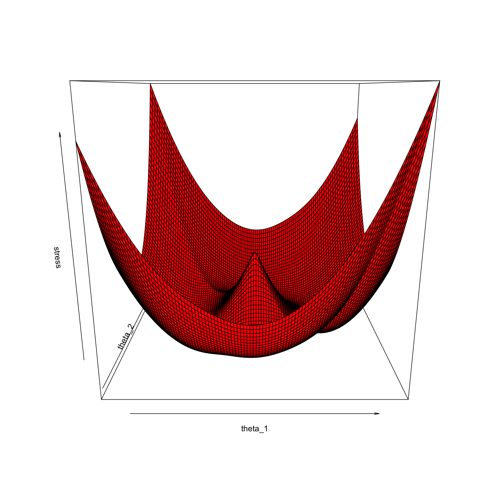
We see the symmetry, following from the fact that stress is even. We also see the local maximum at the origin, where stress is not differentiable. Also note the ridge, where \(d_{12}(\theta)=0\) and where stress is not differentiable either. The ridge shows nicely that on rays emanating from the origin stress is a convex quadratic. Also, far away from the origin, stress globally behaves very much like a convex quadratic (except for the ridge). Clearly local minima must be found in the valleys surrounding the small mountain at the origin, all within the sphere with radius \(\sqrt{2}\).
3.6.3 Global Contour
Figure @ref(fig:globalperspective) is a contour plot of stress over \((-2,+2)\otimes(-2,+2)\). The red line is \(\{\theta\mid d_{12}(\theta) = 0\}\). The blue line has the minimum of the convex quadratic on each of the rays through the origin. Thus all local minima, and in fact all stationary points, are on the blue line. Note that the plot uses \(\theta\) to define the coordinate axes, not \(\gamma=(\alpha,\beta)\). Thus there are no stationary points at \((0,1)\) and \((1,0)\), but at the corresponding points (1.3938469, 0) and (1.0406404, 0.8849253) in the \(\theta\) coordinates (and, of course, at their mirror images).
Besides the single local maximum at the origin, it turns out that in this example there are five pairs of stationary points. Or, more precisely, I have not been able to find more than five. Each stationary point \(\theta\) has a mirror image \(-\theta\). Three of the five are local minima, two are saddle points. Local minima are plotted as blue points, saddle points as red points.
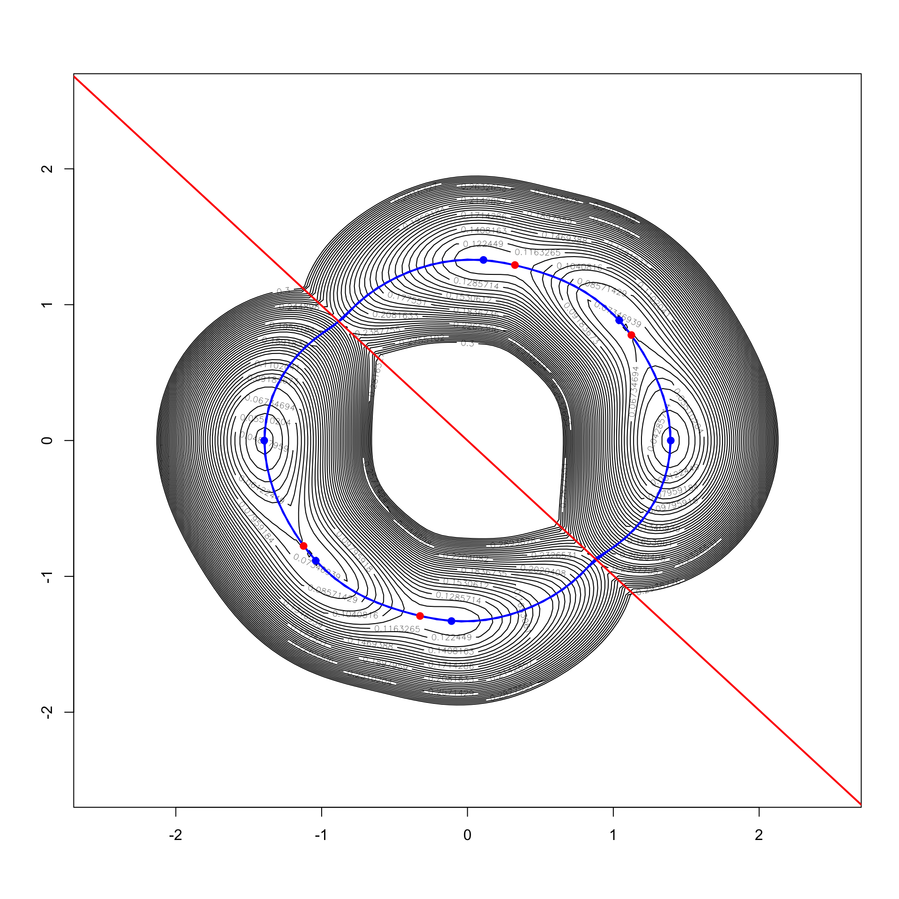
3.6.4 Stationary Points
3.6.4.1 First Minimum
We zoom in on the first local minimum at (1.0406404, 0.8849253). Its stress is 0.0669873, and the corresponding configuration has three points in the corners of an equilateral triangle and the fourth point in its centroid. Note that this local minimum is a saddle point in configuration space \(\mathbb{R}^{4\times 2}\) (Trosset and Mathar (1997)). The eigenvalues of \(B(\theta)\) are (1.3686346, 1) and those of the Hessian \(I-H(\theta)\) are (1, 0.0817218). The area of the contour plot around the stationary value is in figure @ref(fig:contfirstmin).
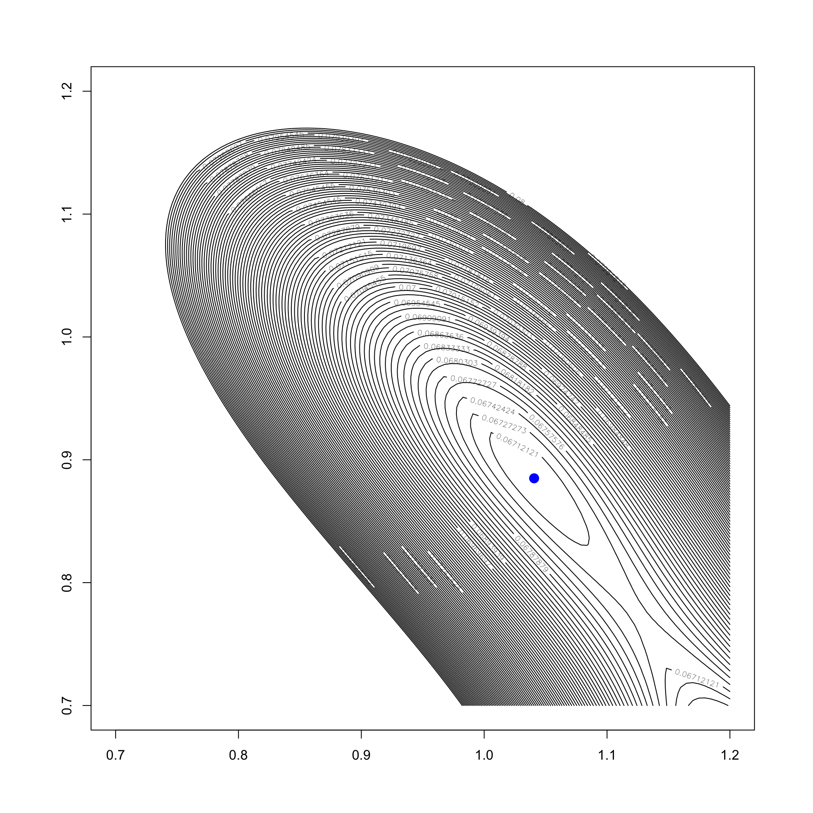
3.6.5 Second Minimum
The second local minimum (which is the global minimum) at (1.3938469, 0) has stress 0.0285955. The configuration are the four points at the corners of a square. The eigenvalues of \(B(\theta)\) are (1.1362799, 1) and those of the Hessian \(I-H(\theta)\) are (1, 0.3743105). The area of the contour plot around the stationary value is in figure @ref(fig:contsecmin).
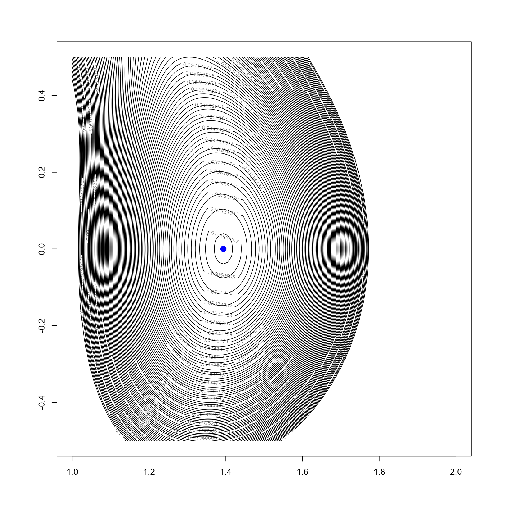
3.6.6 Third Minimum
The third local minimum at (0.1096253, 1.3291942) has stress 0.1106125, and the corresponding configuration is in figure @ref(fig:confthirdmin).
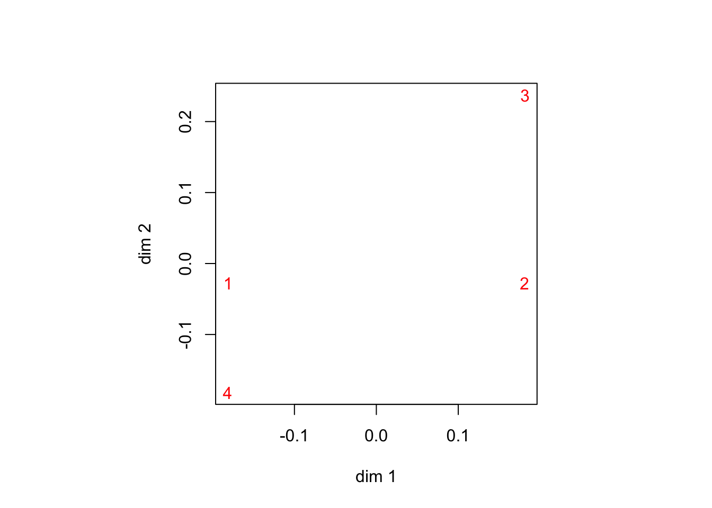
The eigenvalues of \(B(\theta)\) are (1.5279386, 1) and those of the Hessian \(I-H(\theta)\) are (1, 0.2362079). The area of the contour plot around the stationary value is in figure @ref(fig:contthirdmin)
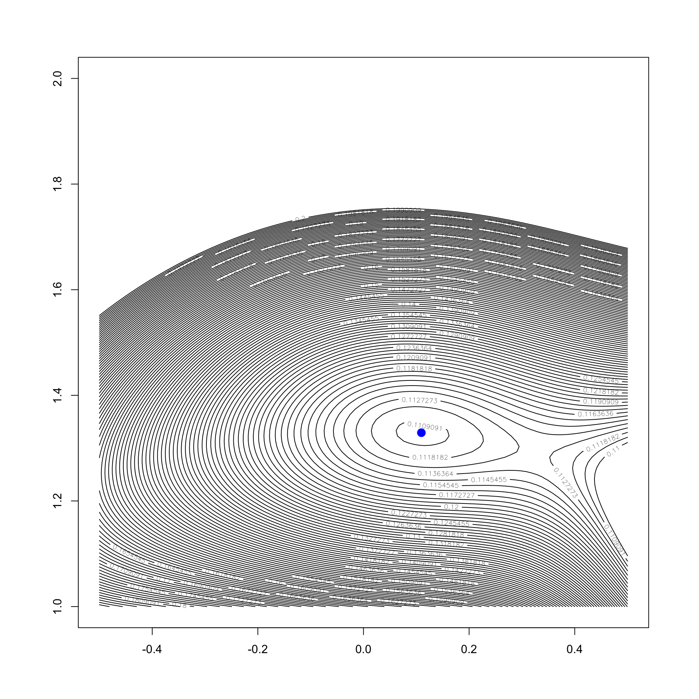
3.6.7 First Saddle Point
The saddle point at (0.3253284, 1.2916758) has stress 0.1128675, and the corresponding configuration is in figure @ref(fig:conffirstsad).
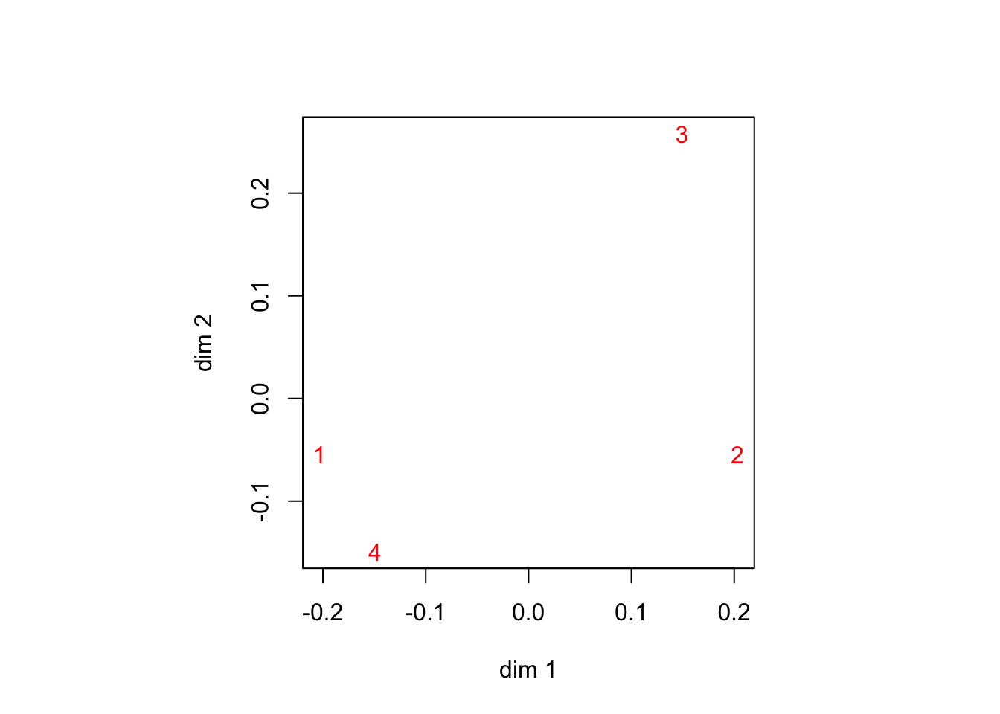
The eigenvalues of \(B(\theta)\) are (1.7778549, 1) and those of the Hessian \(I-H(\theta)\) are (1, -0.311088). The area of the contour plot around the stationary value is in figure @ref(fig:contfirstsad)
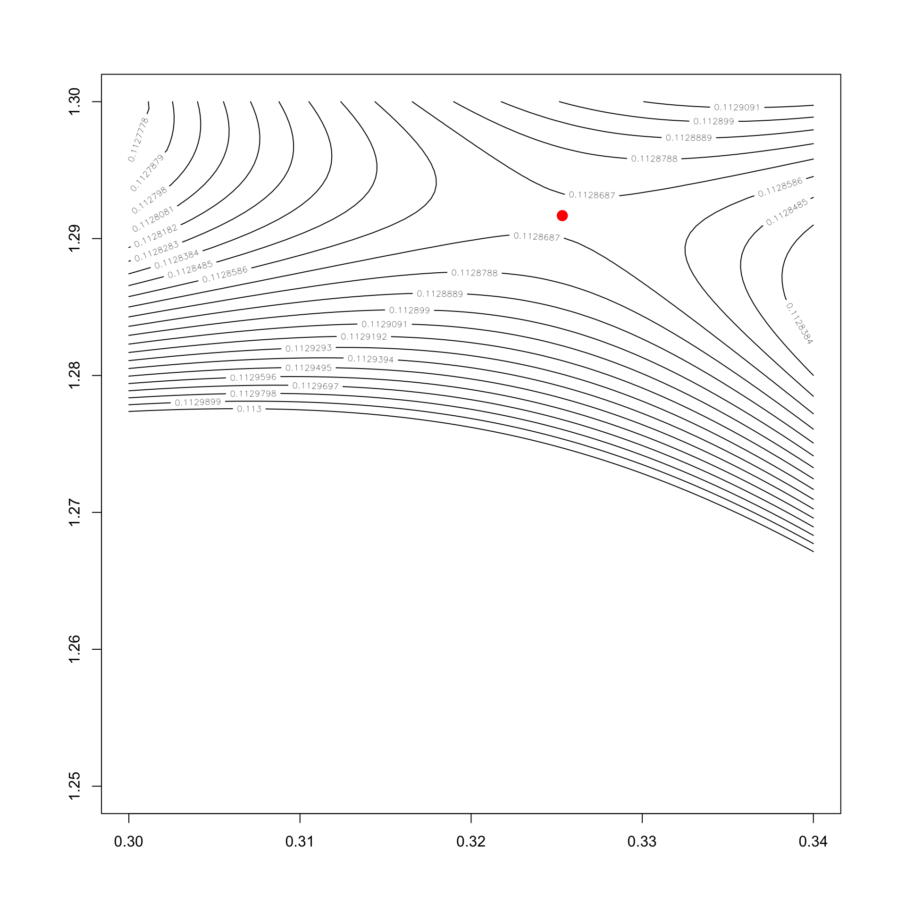
3.6.8 Second Saddle Point
The saddle point at (1.1238371, 0.7762046) has stress 0.0672483 and the corresponding configuration is in figure @ref(fig:confsecsad)
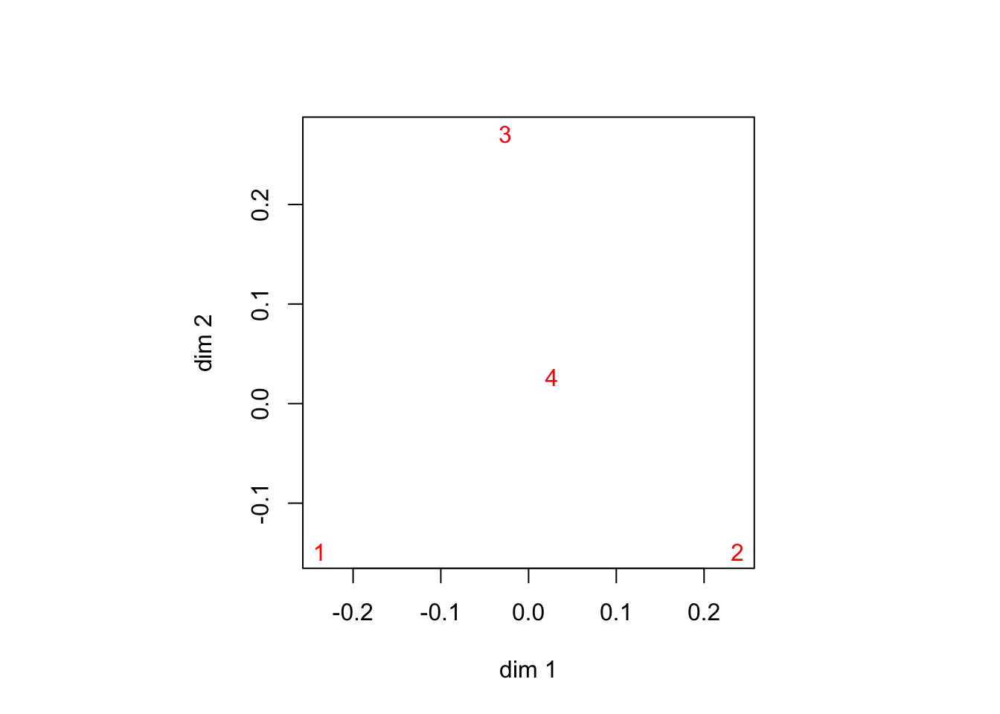
The eigenvalues of \(B(\theta)\) are (1.4111962, 1) and those of the Hessian \(I-H(\theta)\) are (1, -0.0841169). The area of the contour plot around the stationary value is in figure @ref(fig:contsecsad)
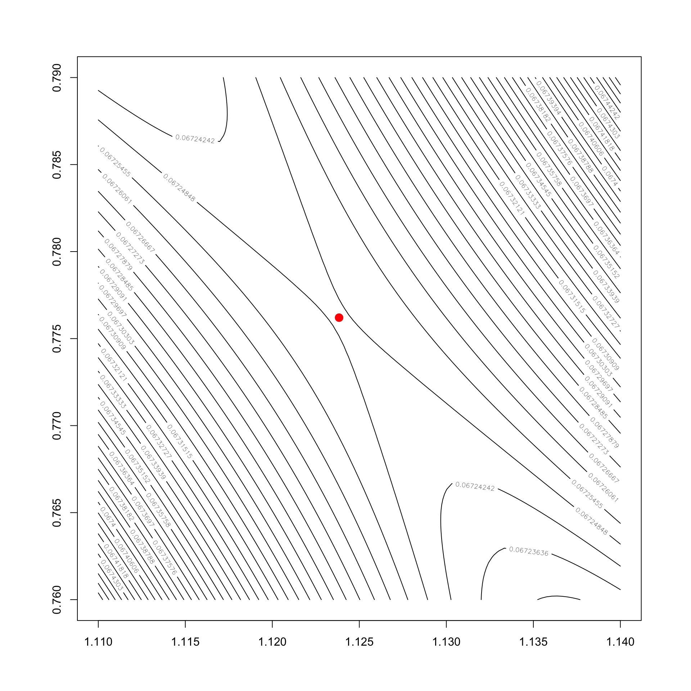
3.7 Another Look
Remember that \(\rho(\theta)=\theta'B(\theta)\theta\). Thus \(\sigma(\lambda\theta)=1-\lambda\rho(\theta)+\frac12\lambda^2\theta'\theta\), and \[ \min_\lambda\sigma(\lambda\theta)=1-\frac12\frac{\rho^2(\theta)}{\theta'\theta}. \] Thus we can minimize \(\sigma\) over \(\theta\) by maximizing \(\rho\) over the unit circle \(\mathcal{S}:=\{\theta\mid\theta'\theta=1\}\). This is a nice formulation, because \(\rho\) is norm, i.e. a homogeneous convex function of \(\theta\). Consequently we have transformed the problem from unconstrained minimization of the DC function (i.e. difference of convex functions) stress to that of maximization of a ratio of norms. In turn this is equivalent to maximization of the convex function \(\rho\) over the unit circle, or, again equivalently, over the unit ball, a compact convex set. This transform was first used in MDS by De Leeuw (1977), partly because it made the theory developed by Robert (1967) available.
The levels sets \(\{\theta\mid\rho(\theta)=\kappa\}\) are the \(\rho\)-circles defined by the norm \(\rho\). The corresponding \(\rho\)-balls \(\{\theta\mid\rho(\theta)\leq\kappa\}\) are closed and nested convex sets containing the origin. Thus we want to find the largest \(\rho\)-circle that still intersects \(\mathcal{S}\). The similarity with the geometry of eigenvalue problems is obvious.
In our example we know that the global optimum of stress is at (1.3938469, 0), and if we project that point on the circle it becomes (1, 0). The corresponding optimal \(\rho\) is 1.3938469. Figure @ref(fig:rhocontour) gives the contourplot for \(\rho\), with the outer \(\rho\)-circle corresponding with the optimal value. The fact that the optimal value contour is disjoint from the interior of \(\mathcal{S}\) is necessary and sufficient for global optimality (Dür, Horst, and Locatelli (1998)). Notice the sharp corners in the contour plot, showing the non-diffentiability of \(\rho\) at the points where \(d_{12}(\theta)=0\). We could also look for the minimum of \(\rho\) on the unit circle, which means finding the largest \(\rho\)-circle that touches \(\mathcal{S}\) on the inside. Inspecting figure @ref(fig:rhocontour) shows that this will be a point where \(\rho\) is not differentiable, i.e. a point with \(d_{12}(\theta)=0\). This minimum \(\rho\) problem does not make much sense in the context of multidimensional scaling, however, and it not related directly to the minimization of stress.

3.8 A Final Look
Now that we know that the MDS problem is equivalent to maximizing \(\rho\) on the unit circle, we can use nonlinear coordinates \((\theta_1,\theta_2)=(\sin\xi,\cos\xi)\) to reduce the problem to a one-dimensional unconstrained one in, say, ``circle space’’. Thus, with the same abuse of notation as for stress, \(\rho(\xi):=\rho(\sin\xi,\cos\xi)\), and we have to maximize \(\rho\) over \(0\leq\xi\leq\pi\).
In figure @ref(fig:rhononlinearplot) we have plotted \(\rho\) as a function of \(\eta\). There are blue vertical lines at the three local minima in coefficient space, red vertical lines at the stationary points, and a green vertical line where \(d_{12}(\xi)=0\). Note that in circle space stress has both multiple local minima and multiple local maxima.
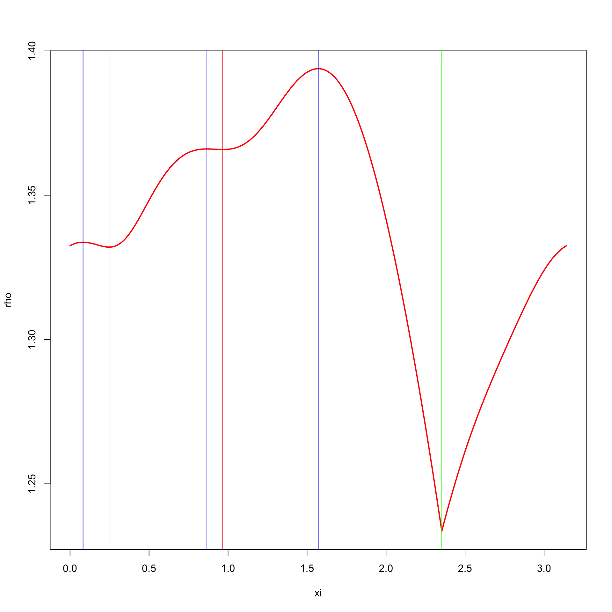
From lemma xxx we see that the second derivative \(\mathcal{D}^2\rho(\xi)\) is equal to \(\mathbf{tr}\ H(\xi)-\rho(\xi)\). For the three local minima in coordinate space we find second derivatives 0, 0, 0 in circle space, i.e. they are properly converted to local maxima. The two stationary points in coordinate space have second derivatives 0, 0, and are turned into local minima.
For more general cases, with a basis of \(n\) configurations, we know from Lyusternik and Schnirelmann (1934) that a continuously differentiable even function on the unit sphere in \(\mathbb{R}^n\) has at least \(n\) distinct pairs of stationary points.
3.9 Discussion
Note that we have used \(\sigma\) for three different functions. The first one with argument \(Z\) is defined on configuration space, the second one with argument \(\gamma\) on coefficient space, and the third one with argument \(\theta\) also on coefficient space. This is a slight abuse of notation, rather innocuous, but we have to keep it in mind.
From lemma xxx we see that \(\mathcal{D}\sigma(X)=\mathcal{D}\sigma(Y)=0\) then \(\mathcal{D}\sigma(1,0)=\mathcal{D}\sigma(0,1)=0\). Thus stationary points in configuration space are preserved as stationary points in coefficient space, but the reverse implication may not be true. If \(\mathcal{D}^2\sigma(X)\) and \(\mathcal{D}^2\sigma(Y)\) are positive semi-definite, then so are \(\mathcal{D}^2\sigma(1,0)\) and \(\mathcal{D}^2\sigma(0,1)\). Thus local minima are preserved. But it is entirely possible that \(\mathcal{D}^2\sigma(X)\) and/or \(\mathcal{D}^2\sigma(Y)\) are indefinite, and that \(\mathcal{D}^2\sigma(1,0)\) and/or \(\mathcal{D}^2\sigma(0,1)\) are positive semi-definite. Thus saddle points in configuration space can be mapped into local minima in coefficient space. As we will see this actually happens with \(Y\), the equilateral triangle with center, in our example.
3.10 Coordinates
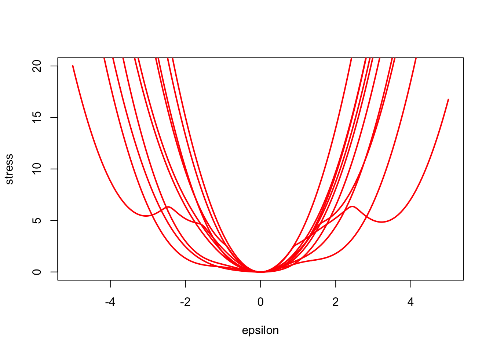
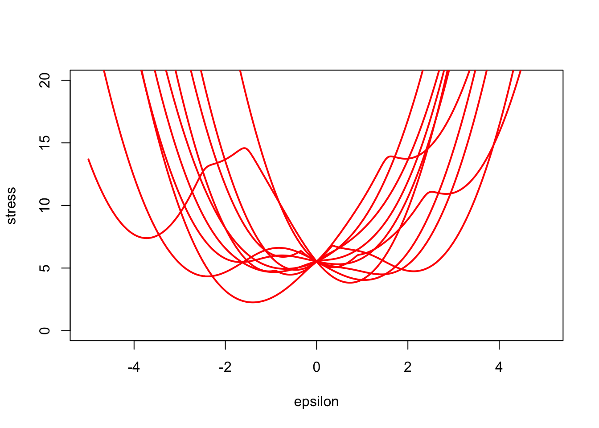
Let’s look at a small example with four points, all dissimilarities equal, and all weights equal to one. There is a local minimum with four points in the corners of a square, with stress equal to 0.0285955. And there is another local minimum with three points forming an equilateral triangle, and the fourth point in the center. This has stress 0.0669873. We can compute stress for all points of the form \(\alpha X+\beta Y\), where \(X\) and \(Y\) are the two local minima. Figure @ref(fig:equalcontourplot) has a contour plot of \(\sigma(\alpha,\beta)\), showing the local minima at \((1,0)\) and \((0,1)\), and the local maximum at \((0,0)\).
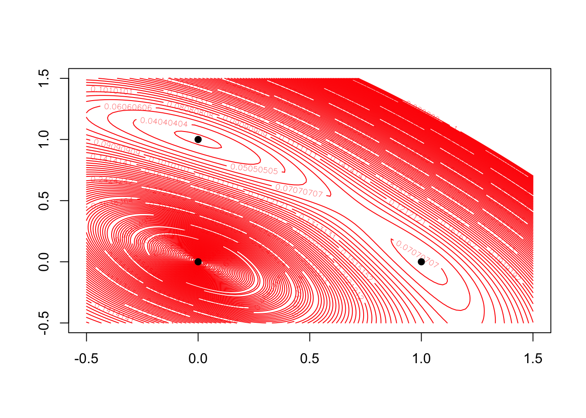
Alternatively, we can plot stress on the line connecting \(X\) and \(Y\). Note that although stress only has a local maximum at the origin in configuration space, it can very well have local maxima if restricted to lines. In fact on a line connecting two local minima there has to be at least one local maximum.
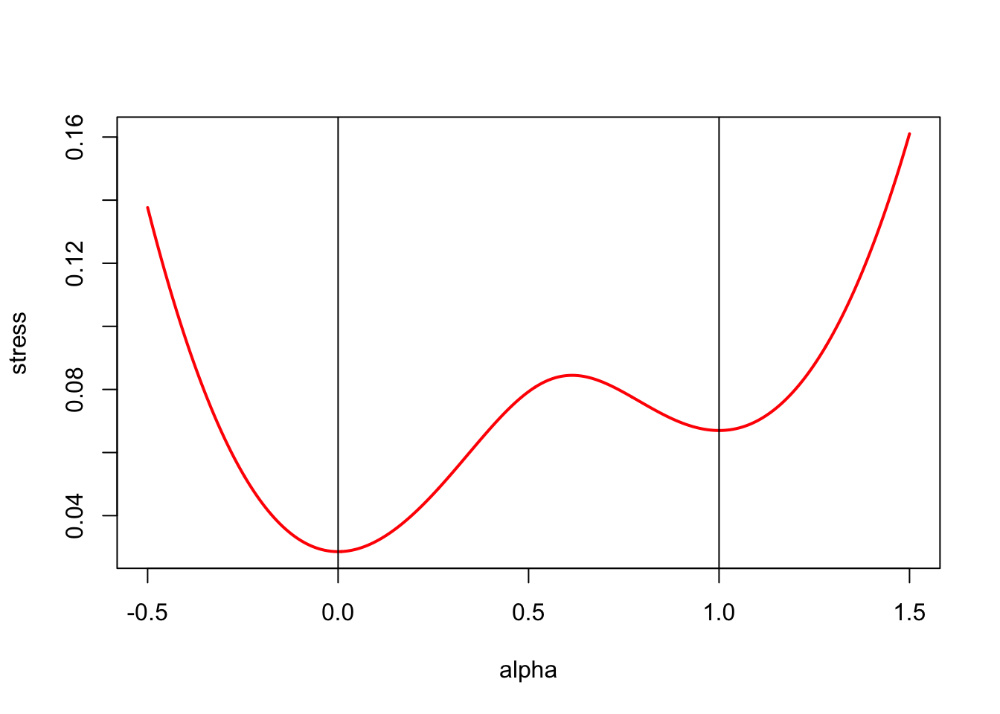
A fundamental result, which forms the basis of chapter @ref(fullchapter) in this book, is that \(\sigma\) is convex on Gramian Space, i.e. on the closed convex cone of all \(C\gtrsim 0\).